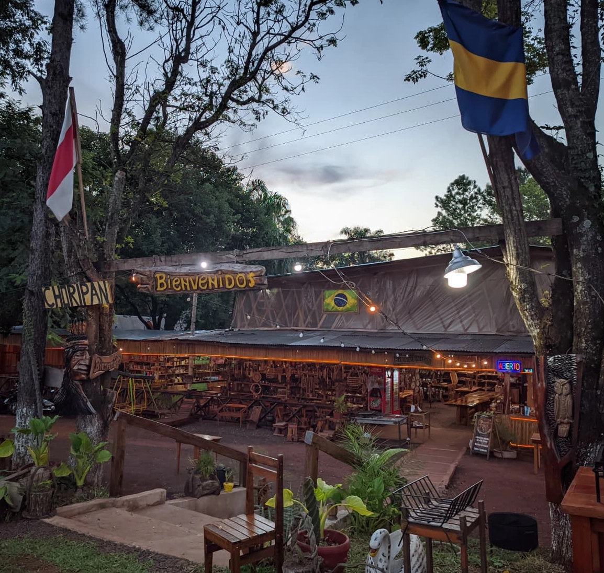
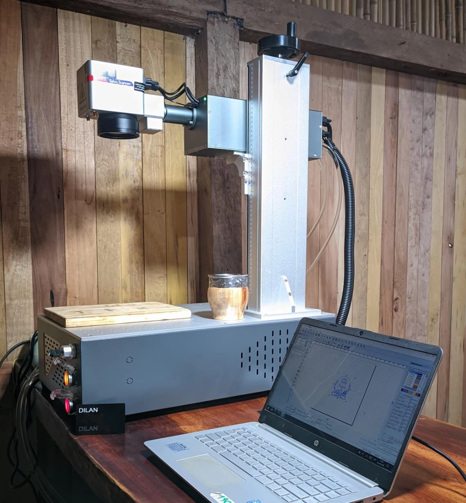
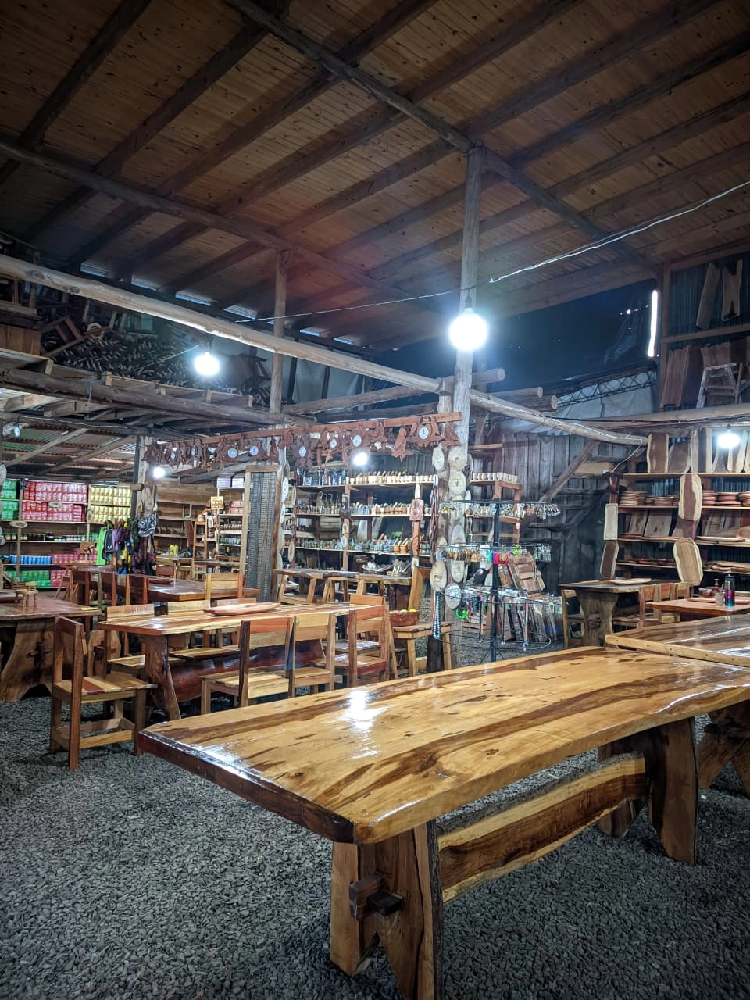
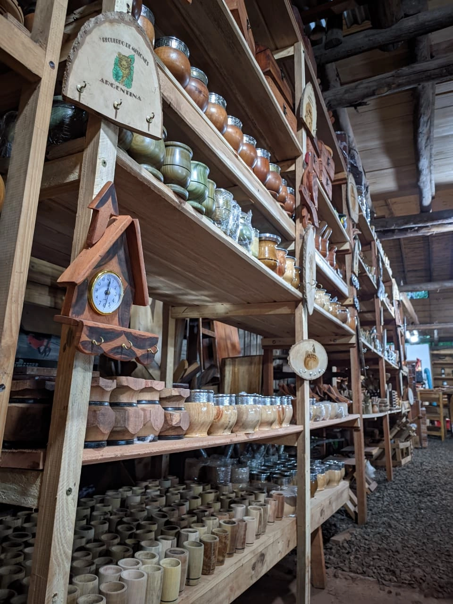
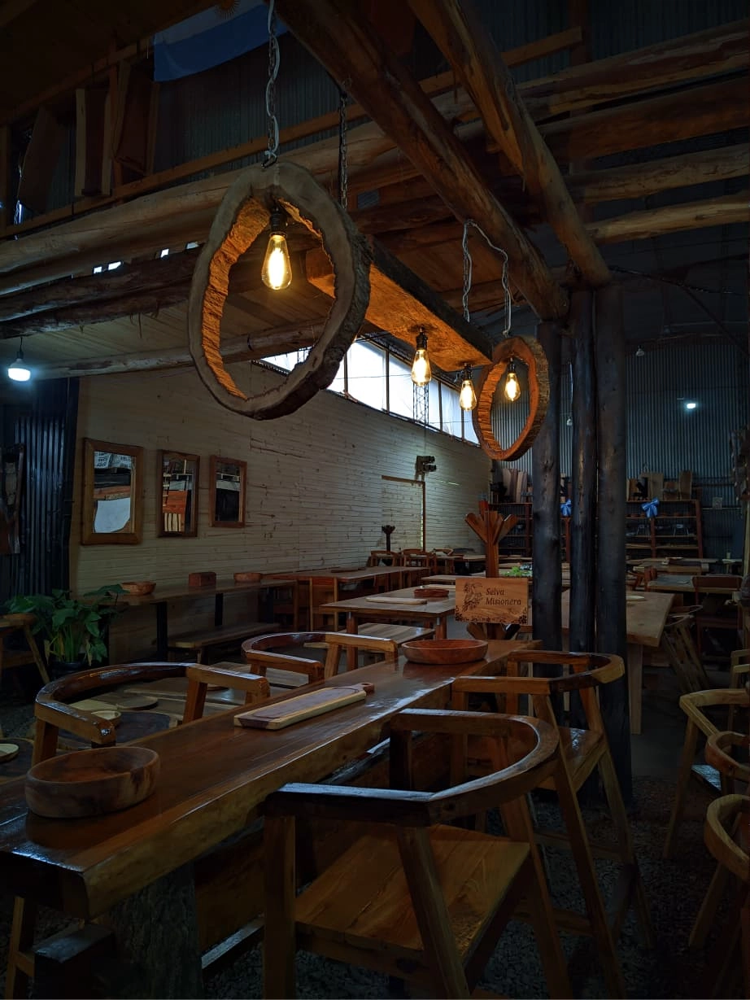

Parador Roca
Comida, artesanía y experiencias en un solo lugar
Una parada con alma en el corazón de Misiones. Donde el reloj no importa y siempre hay alguien para recibirte.
Un lugar para detenerse,
comer y descubrir
Parador Roca es el único parador rural en Gobernador Roca abierto las 24 horas. Nace en la ruta, como nacen los buenos encuentros: sin aviso y con el corazón abierto. Somos una parada obligada para quienes buscan comida casera a toda hora, productos hechos a mano y esa calidez que solo un lugar con alma puede ofrecer.
Acá no hay apuro. Hay madera, fuego, mate y gente que pone el corazón en cada detalle. Nuestro parador está pensado para que te sientas como en casa — sin importar la hora que marque el reloj. Desde un plato caliente hasta un mate con tu nombre grabado, cada experiencia lleva nuestra impronta.

Tres pilares que nos definen
Cada servicio está pensado para que vivas una experiencia única en la ruta argentina.
Gastronomía 24h
Comida casera recién hecha a toda hora. Platos calientes, sandwiches, bebidas y el mejor aroma a hogar.
Ver el menú →Artesanías & Mates
Mates tallados, tablas de madera, cuchillos artesanales. Productos únicos hechos a mano con dedicación.
Ver galería →Regalos personalizados
Poné tu nombre, una frase o un diseño en mates, maderas y regalos. Listos en minutos.
Hecho para vosTus mates y maderas, con tu nombre
¿Querés un regalo que nadie más tenga? Grabamos nombres, frases, fechas y diseños en mates, maderas y acrílicos. Lo que imagines, lo hacemos realidad en minutos.
Lo hacemos con grabado láser UV de alta precisión, exclusivo en la zona. Rápido, prolijo y con terminación profesional.
📦 Envíos a todo el país — Recibí tu producto donde estés
💬 Contame tu idea
Preguntas frecuentes
Todo lo que necesitás saber sobre Parador Roca, nuestros servicios y envíos.
No hay ninguna obligación de consumir. Podés parar a estirar las piernas, tomar algo fresco, usar el baño o simplemente descansar un rato. Sos bienvenido, consumas o no.
¡Sí, por supuesto! Las mascotas son más que bienvenidas. Es una parada rural con espacio al aire libre, así que tu perro (o el animal que sea) puede estirar las patas y descansar junto a vos. Solo te pedimos que lo mantengas cerca y recojas lo que deje.
Tenemos mates tallados, tablas de madera, cuchillos artesanales, llaveros, mates personalizados y más. Todo hecho a mano, con madera de la zona y terminaciones únicas. Si buscás algo en particular, consultanos por WhatsApp y te contamos qué hay disponible en el momento.
Contamos con una máquina de grabado láser UV de alta precisión. Podés personalizar mates, madera, acrílico y más con nombres, frases o diseños. El proceso es rápido y el resultado es profesional.
El alma de Parador Roca
Tocá una categoría para ver todas las fotos. Deslizá para recorrerlas.



Ubicación & Horarios
Estamos en la ruta, listos para recibirte en cualquier momento del día.
Dónde encontrarnos
Dirección:Gdor. Roca, Ruta 12 km 134
Provincia de Misiones, Argentina
Horario
Abierto las 24 horas, los 7 días de la semana, los 365 días del año.
No importa la hora. Siempre hay algo rico, alguien despierto y un lugar para vos.
Hablá con nosotros
Pedí comida, consultá por productos personalizados o contanos qué necesitás.
Respondemos rápido por WhatsApp.